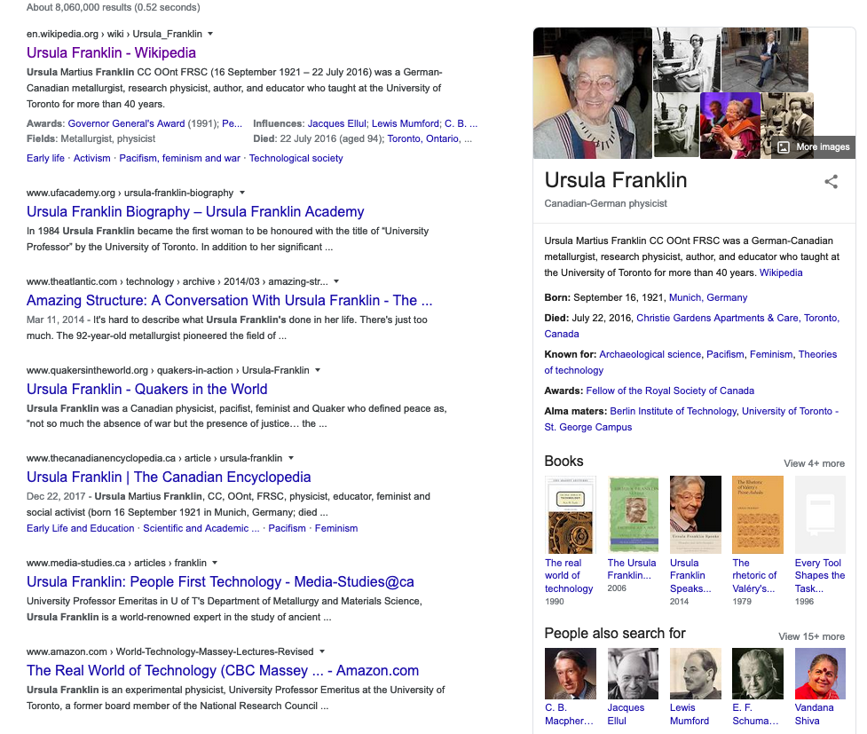
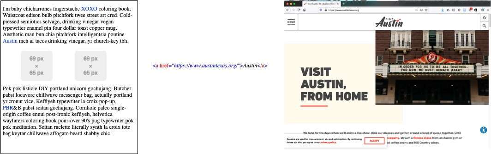
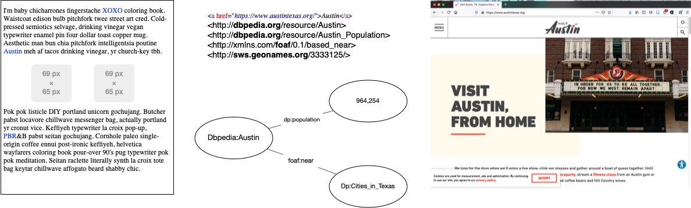
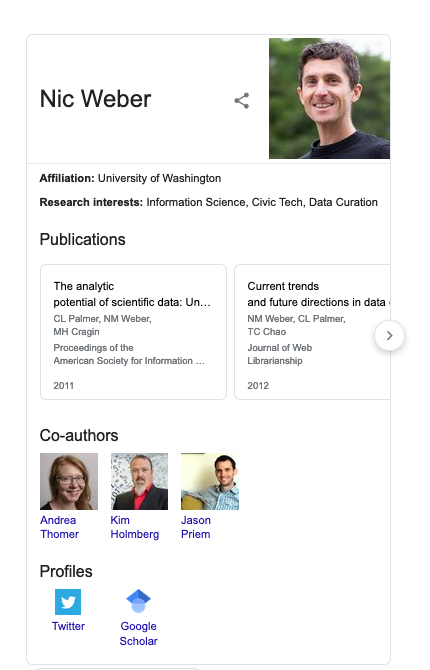

Chapter 10 Linked Data
The final week in Data Curation II addresses the prospect of linked data for curation. At various points this quarter we have discussed the idea of semantically enhanced data that takes on a form of artificial intelligence. This “intelligence” is practically achieved through enhanced markup of data and web infrastructure that enables applications to make use of data that are published following strict linked data standards. Thus far we have touched on, but not explored in-depth the ways that linked data practically manifests in curation work. In the following chapter, I will introduce some working definitions and provide an overview of concepts related to linked data and the promise, but ultimate failure of the semantic web. Next week, I will describe ontologies and their role in a linked data ecosystem.
10.0.1 The Early Web
A “web of information” seems almost silly to say aloud in certain academic or technical circles. We have, over a very short period of time, gone from an internet infrastructure that was rudimentary and difficult to access, to a paradigm of native web-publishing. Graphic user interfaces have provided a layer of accessibility to what are otherwise rote protocols for transferring information between computers, and for structuring rich information experiences. We can browse, search, and discover all kinds of data by simply navigating and “clicking” on hypertext links.
For all of the affordances of the web there are also some substantial limitations of a first generation of web technologies for data. These technologies allow for some exchange and consumption of data, but our end-user experience of the web often seems frustratingly incomplete. For example - HTML, CSS, and Javascript provide for a rich user experience with web-pages, but the underlying markup of text using these standards doesn’t allow for the interoperable exchange of structured data between applications. Without a way to make the data behind a web-page portable and transferrable - we are left with static pages that can simply point at one another, but not accurately incorporate or consume data from one another.
Let’s take an example of searching for information:
On the early web, if I searched Ask Jeeves for the keyword “Ursula Franklin” I would likely get a list of indexed pages that include a reference to or about the scientist named Ursula Franklin (Here are the actual results from Ask Jeeves). In order to browse and uncover some facts about this monumentally important person - I need to click on a link, read a page, and digest the factual information that the static webpage contains. This is despite the fact that Ask Jeeves has indexed millions of webpages about Ursula Franklin - many of these pages contain structured factual information about her life, her publications, and her contributions to a scientific enterprise. The early web only allowed pages to point at one another through links.
In contemporary search engines, I can search Google for “Ursula Franklin” and immediately receive both indexed webpages about the scientist, as well as some structured factual information about her life, her written works, and similar scientists.

The display of this factual information (called the “knowledge bar” isn’t just a neat trick by Google - it is made possible by a semantically enhanced information that is queried and retrieved based on linked data standards. This contemporary version of the web allows for the data - information embedded in pages such as photos, videos and facts - to be queried and retrieved. That is practically achieved through markup with linked data standards that both point at one another, but also allow for indexing and retrieval of data.
In the following sub-sections I’ll unpack how this linked data ecosystem evolved, and the implications that a paradigm of linked data holds for the working curation professional.
10.0.2 The promise and failure of the Semantic Web
In short, the semantic web was an approach to the development of web technologies that privileged machine-readable data. This readability or “machine intelligence” was proposed to overcome the limitations of Web 1.0. The early technologies that facilitated exchange of information, such as HTTP and HTML, were meant to enable a web of information to emerge - linking documents to one another through standards that could interoperate regardless of what browser, or which search engine we choose to use.
The semantic web - which was positioned between the interactivity of Web 2.0 and Web 3.0 - was to be facilitated by markup languages that allow for the semantic contents of data to be declared explicitly, and logic to be used inferentially to build connections between data embedded in web documents. In the vision of the semantic web, web content could both be displayed (like typical HTML and CSS) as well as queried and acted upon by web applications. We previously discussed both schema.org and the idea of a “triple” as ways in which data can be encoded such that they are machine-readable on the web. The idea of the triple is central to the vision of semantic web evangelists. They see all factual content as relationships which can be explicitly declared. By explicitly declaring just a few relationships we can build up a variety of “inferences”. Think back to our discussion of Simpsons characters - by knowing some familial relationships we could infer that Lisa and Bart were siblings without having to explicitly declare that is the case.
Where the semantic web failed was in believing that this kind of explicit declaration of web content was scalable. The effort needed to structurally enhance all factual information with rigid standards was overwhelming (given the difficulty of using standards like the Resource Description Framework or RDF) - given the variety of information on the web and the effort needed to explicitly declare this factual information in a markup language like RDF. As a result, the semantic web vision of building inference engines has faltered. But, the ability to use markup to facilitate the exchange of data on the web - linked data - has had much more success. Linked data makes use of lightweight standards that allow for a few simple statements to be included in a web-page - facilitating exchange of data. By moving from a vision of “inference” and “intelligence” to machine-readable linking of data has proved much more viable for data curators.
In previous chapters we have discussed some of the ways in which machine-readability is achieved, but we did not go into detail about how this encoding practically takes place. In the following section I will describe some of the practical realities of linked data, and how linked data is created using the standard JSON-LD.
10.0.3 Linked Data
The linked data paradigm - which is the practical manifestation of the semantic web vision - makes use of structured markup to enhance web resources such that we can query and discover related information through simple declarations.
Let’s take a simple web page that includes a bunch of random ideas expressed about people, places, and things [^note: I choose the hipster Lorum Ipsum random text generation to create text for this “dummy” web page]. If one of those topics in our web page is about Austin, TX web 1.0 would create a link between that topic and a relevant page about Austin, TX.

In a linked data paradigm we could not only create a simple link from one web resource to another, but we could semantically enhance this markup using existing data about Austin, TX on the world wide web. We would practically do this by explicitly stating that Austin, TX is a place, that place is near some other places in Texas, and Austin, TX has a particular population. Just as we have discussed in previous chapters - we want to make these kinds of explicit declarations drawing upon existing standards. In this example, we want to draw on authoritative data about places that exist in the real world. DbPedia is a linked data resource that contains exactly this kind of information. DbPedia is in fact all of the information that exists in Wikipedia put into a linked data format. This allows us to make simple declarations in our markup “linking” to what DbPedia knows about the place Austin, TX.

Note that in the markup of the image above - we not only created an HTML link between the two resources, but we also included some markup that referenced DbPedia. We essentially said “DbPedia - tell us all of the facts that you know about Austin, TX including its population and what other places Austin, TX is near”. The linked data graph that results from this markup is below our syntax. Using just this simple markup, DbPedia was queried and returned to our webpage some factual information about Austin, TX - including that it has a population of 964,254, and that it is near other cities in Texas. Pretty neat, right? All we had to do was ask DbPedia what it knows about Austin, TX and the linked data syntax of our page allowed machines to trade factual information about what is known about Austin, TX.
Our original “dummy page” is now “machine readable” in the sense that it contains not only a reference to another web page about Austin, TX but a whole range of new facts.
In the example above I cheated a little by knowing that DbPedia was a linked data source. I had to have prior knowledge that such a valuable resource existed and that I could create some admittedly non-trivial syntax could be used to semantically enhance my webpage. The good news is that you don’t have to know a lot of linked data sources to create valuable linked data. In fact, all of the linked data sources (sometimes called the “linked data cloud”) started back in 2007 with just 12 sources.

It has now (as of May 2020) grown to over 1200 authoritative linked data sources1 that can be used to semantically enhance any web page. More importantly, we can create linked data using standards like Schema.org to turn any data that we publish to the web into linked data. That is, we can link any data we publish up to this growing “cloud” through syntax. Doing so increases the ability of our data to be meaningfully discovered, indexed by emerging linked data sources, and in essence, connected to all other data that exists on the web!
In the next section we will look at how we can practically link our data to existing resources. This is acheived through the standard JSON-LD.
10.0.4 JSON-LD
Schema.org - which we have talked about in the previous chapter on Data Discovery - is practically implemented on the web through an encoding standard called JSON-LD (which stands for JSON-Linked Data). To understand the power of JSON-LD let’s think all the way back to our chapter on Tables, Trees, and Triples where I described differences in hierarchical data structuring (XML) vs graph structuring (JSON). Recall that in that chapter I warned:
“What we gain expressive power from a markup language comes at the expense of computational tractability. The more syntax we have to write to define how and where a set of data are interpreted by our computers at the physical level, the more difficult and expensive it will be to retrieve that data.”
In that chapter I also explained that JSON is an object-oriented graph and XML is a hierarchical tree. The tradeoff between these two structures is that XML can use a schema to explicitly declare what it’s content is about (I’ll save you some jumping back and forth and paste that section below in quotations)
“JSON treats an object as independent from any kind of semantic meaning that humans might reliably expect that object to have. JSON, in its structuring of data, is therefore able to achieve a kind of independence at the data level that XML cannot. But, removing this semantic (or contextual) meaning has both affordances and limitations. By keeping data objects “independent” from the schema we have the ability compute against (that is retrieve, reorder, and analyze) objects efficiently. But, for JSON we also lose the ability to embed meaning in the structure of our data."
JSON-LD is an attempt to add meaning to the structure of graph data through a schema. In fact, Schema.org provides (one of many) schemas for JSON-LD. This means our independent objects in JSON can be given a declarative value (a schema) and that schema can, if structured properly, start to link our data to all of the linked data that exists on the world wide web.
JSON-LD has some key markup features that are necessary to practically implement linked data. In introducing these features I’ll also note how the syntax of JSON-LD works through examples.
10.0.5 JSON-LD Applications
JSON-LD operates exactly like JSON - there are attributes and values that are declared. In JSON these declarations are “dumb” objects - they don’t have any semantic meaning. In JSON-LD we have the ability to give these objects meaning through external schemas. The two features we will look at first are the Context and ID tags.
10.0.5.1 Context
Context or @Context - In JSON-LD the @Context tag is used to declare a schema that will be used to name attributes in the dataset. So any attribute in our JSON-LD should be understood as following the schema that @Context defines. If we plan to use, for example, the Schema.org standard we can in the @Context syntax specify this is the standard we are following and expect that all of the machines that interpret our data’s attributes as being in the Schema.org standard.
Here is an example of how this might practically work. The following is a typical JSON representation of some structured information about me.
{
"name": "Nic Weber",
"homepage": "http://nicweber.info",
"photo": "http://nicweber.info/nic.png"
}In this data we have attribute and value pairs like name and Nic Weber… But our attributes don’t mean anything to a machine. These are just objects that we, as data curators, have to know and understand in order to make sense of.
If we use the JSON-LD @Context tag we can pull in a schema to give our attributes some semantic meaning.
{
"@context": {
"name": "http://schema.org/name"
"homepage": "http://schema.org/url"
"photo": "http://schema.org/image""
},
"name": "Nic Weber"
"homepage": "http://nicweber.info"
"photo": "http://nicweber.info/nic.png"
}In this example we have declared that our attributes are not just dumb objects, but they mean something specific in the linked data standard of Schema.org. The name variable in fact means what Schema.org defines as a “name”. A machine can interpret this information given the namespace that defines “name” at the following address http://schema.org/name.
Note that in this example our data also has an attribute homepage that corresponds with the Schema.org definition for a URL, and a photo which corresponds with the Schema.org definition of an Image. So a machine can interpret that Nic Weber is the name of a person, that person has a webpage, and that webpage contains a photo of Nic Weber. If another web resources wanted to consume my linked data - they could ask Schema.org “What do you know about Nic Weber” and retrieve a result like “This is a person, with a webpage, and a photo”. To see this in practice - here is a result when you search for me on Google. The University of Washington has used Schema.org to say who I am, what my photo is, and through this web of linked data Google also identifies my Google Scholar page where it pulls in Co-authors and relevant publications that appear on the web.

All of this semantic meaning is achieved through the use of JSON-LD and Schema.org.
10.0.5.2 ID
In a linked data paradigm every factual statement is made up of resources, and in order to resolve or find those resources we need an identifier which uniquely picks out that the information about that resource.
The ID or @ID tag in JSON-LD then is simply the syntax that is used to uniquely identify things that are being described in the data. Practically, this differs only slightly from the @Contextwhich is used to pull in an existing schema and name attributes. With @ID we can instead use the namespaces to identify our objects.
Here is a JSON-LD encoding of the same factual information as our previous example.
{
"http://schema.org/name": "Nic Weber",
"http://schema.org/url": { "@id": "http://nicweber.info" },
"http://schema.org/image": { "@id": "http://nicweber.info/nic.png" }
}Note - we are still using Schema.org as the authority for things like “name”, “url” and “image” - only with the @ID tage we used the schema.org namespace as our actual attribute name. So for a JSON-LD encoding of information about me - there is no plain language “name” attribute, but instead the attribute is “http://schema.org/name”. In some ways - this makes machine operations easier, there are fewer lines of data to read and interpret. But, the cost of using this form of syntax is that it is much less human readable (we have to know, for example, what “url” means to accurately interpret what the link “http://nicweber.info” stands for).
Both approaches - using plain language attribute names as well as id names - are valid. We can use either to create linked data about Nic Weber. The important point is that we have used JSON-LD to create graph structured data that is semantically meaningful. In particular, we added a schema to define attributes in our dataset through the standard Scehma.org and its namespaces.
10.0.6 Linked Data for Curation
The description of linked data above may seem somewhat tenuously related to data curation. In the following section I will draw on examples from previous chapters to explain how and why linked data is relevant to our practical work in curating data for reuse.
In our first chapter we used the scenario of an intrepid graduate student sitting in a Brazilian rainforrest counting frogs. Our graduate student transported her observations from the field to a digital computing environment. In doing so she faced a series of choices about how to structure her data for future use. Now, it is unrealistic to expect that our graduate student would follow any of the struct rules described above to create an initial digital record of her observations as linked data. More than likely she will simply enter her data in a spreadsheet application like Excel and use some plain text variation of this table (like a csv) for her analysis.
As downstream curators we will receive a copy of her completed Excel table. In preparing that data for publication the table will likely require some tidying and some restructuring in order to be meaningfully reused. When we have completed this tidying, and created some additional descriptive metadata, we are ready to publish this data to a repository where other users can search for and discover the data. Using linked data we could not just publish some structured descriptive information about the data that is available - but we could also connect this data to all of the other factual information on the web about the species of frogs that are being described, the place where the observations were made, the dates when the observations ocurred, etc. In doing so we would have a semantically rich description of our dataset that could be indexed and made more reliably evaluated by an end-user of our repository. Think for example if, like the Google Knowledge Bar, our data repositories could report factual information about our data and all related data instead of just a static webpage.
Let’s explore how linked data could enhance another example from our previous chapters.
In the Data Discovery chapter I described a process of seeking and ultimately being disappointed by the results of 311 open data relevant to a research project. Problematically - I was interpreting variables described in metadata and then not finding these variables accurately recorded in the dataset that was being described. If in a linked data paradigm there were a standard that was used - like Schema.org - to say exactly what the variable represents and how I should interpret the use of that variable I could have saved a lot of trouble in opening and reading datasets. Further, I could have also had a much better initial search experience. By retrieving standardized descriptive names of the attributes of a dataset I could have likely determined that the data published by New York City, Bellevue, and Detroit did not meet my needs.
Practically though - it seems rather unrealistic to expect that open data publishers who struggle to create accurate and meaningful descriptive metadata could also create linked open data. And this is very true - it is currently rather difficult to publish linked open data without significant effort in markup. But, just as web 1.0 evolved to web 2.0 where interactive web content could be published with tools like Wikipedia, WordPress, or Twitter - so too will there be an evolution of the web to more easily and simply publish semantically enhanced linked data. How and when that next evolution will occur is hard to predict. But2, it is very encouraging to see that major tech companies like Google, Yahoo, and Microsoft are adopting Schema.org, and encouraging it’s use. In fact, just recently Schema.org published a new set of markup recommendations for publishing linked data about Covid-19. If there is any silver lining in the current pandemic it is that we are seeing important use cases about the publishing of timely data emerge. For the time being, linked data is a fancy and sometimes novel method of data publishing that affords some convenience to end users. But, the more rapid and quick we see responses needed for emerging public health and safety scenarios the better we realize the potential for curating linked open data.
10.1 Lecture
10.2 Reading
- Allemang, D., & Hendler, J. (2011). Semantic web for the working ontologist: effective modeling in RDFS and OWL. Second Edition. PDF
- Read Chapter 1 for an introduction to SW’s concepts… if you are interested Chapter 2 gives a bit more detail on how the SW works, and Chapter 3 introduces RDF and knowledge modeling.
- Ontology Development 101 (Noy and McGuiness) https://protege.stanford.edu/publications/ontology_development/ontology101-noy-mcguinness.html (Read Section 1 and 2; 3 and 4 are optional)
- Note - this is a classic formulation of what an ontology is and how to create one… The software they reference in building out the example is called Protege (free https://protege.stanford.edu/ ) - If you are really keen you can follow along.(For reference - this short list from Wikipedia is quite helpful) https://en.wikipedia.org/wiki/Ontology_(information_science)#Components
- Ontology for Data Science https://towardsdatascience.com/ontology-and-data-science-45e916288cc5 Sem Web for the Legal Domain https://content.iospress.com/articles/semantic-web/sw224
Case Study (optional):
- ARL White Paper on Wikidata: Opportunities and Recommendations (2019) https://www.arl.org/publications-resources/4751-arl-white-paper-on-wikidata-opportunities-and-recommendations#.XLdxXZNKh2Y